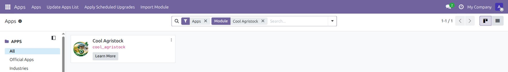
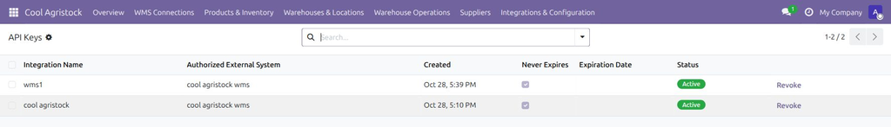
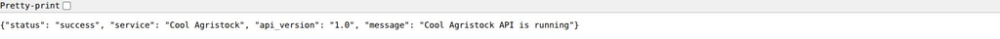

Connect Odoo 19 Inventory with Cool Agristock, an open-source warehouse management system for agribusinesses.
Agricultural cooperatives, agribusinesses, processors, and input distributors — built for businesses in Africa and other emerging markets, though nothing restricts it to any particular region — that already use Odoo 19 and run a compatible external warehouse management system (WMS) they need to keep in sync with Odoo Inventory, instead of re-entering receipts and dispatches by hand in both places.
Cool Agristock is a free, open-source Odoo 19 application that enables businesses to connect compatible external Warehouse Management Systems (WMS) to Odoo Inventory through a secure REST API. It exposes that API so the WMS can read and write product, warehouse, and supplier data; configure unit-of-measure mappings; create and resolve lots and serial numbers; stage initial inventory counts for human review; and create and validate incoming receipts and outgoing dispatches — including lot/serial-tracked products — without a human re-keying anything into Odoo. Cool Agristock remains a standalone application; this module is the bridge between the two systems.
Initial stock counts from your WMS are staged in Odoo for review, not applied automatically. An Inventory Manager compares the WMS's count against Odoo's own records and decides what to do — applying an approved count to actual stock is a separate, manual action in Odoo's native Inventory Adjustment screen. This keeps a human in the loop for every change to your real inventory levels.
Businesses generate and manage their own API keys directly inside the application — creating, naming, revoking, and replacing them without needing Cool Agristock's developers or an external administrator. Each key can be given an expiration date or left to remain valid until manually revoked. Using the generated credentials and the documented REST API, businesses with a compatible WMS can configure their own integration independently; a WMS that isn't natively compatible with this API may require custom integration services (see below).
Cool Agristock itself is, and remains, free and open-source. For businesses that want help going further, the team behind Cool Agristock separately offers optional paid services:
Contact: team@agricarecentres.com

Cool Agristock listed in Odoo's Apps screen.

The API Management screen, where an authorized business user generates, views, and revokes their own API keys. The key's secret value is shown only once, at the moment it is generated, and is never displayed again afterward.

The REST API's health check endpoint, confirmed live and responding.
Fonctionnalités principales
Sécurité
Limites connues
Prérequis
connector, component, component_event, queue_jobDonnées et confidentialité
Le module n'envoie aucune donnée de lui-même ; il répond uniquement aux requêtes du système externe connecté via une clé API.
Documentation
README et référence API complète sur GitHub :
github.com/DOINGGOODPROJECTS/cool_agristockodoo
Key features
Security
Known limitations
Requirements
connector, component, component_event, queue_jobData & privacy
The module sends no data anywhere on its own; it only responds to requests from the external system an authorized user connects via an API key.
Documentation
Full README and API reference on GitHub:
github.com/DOINGGOODPROJECTS/cool_agristockodoo
LGPL-3.0